Look n°19
Chambre de Noël blanche et dorée
Une chambre de Noël féerique, toute en blanc et champagne : lit nuage en bouclette, fenêtre qui scintille, sapin enneigé et anneaux dorés au plafond. Voici les articles pour recréer ce look chez toi.
Prix au 07/11/2026
-
Lit coffre bouclette blanc « nuage » 160 × 200
216 × 177,5 × 89 cm, tête de lit et cadre en gros coussins carrés arrondis, coffre de rangement. Sur l'image, la tête de lit compte 8 gros carrés par rangée ; la vraie en a 6.
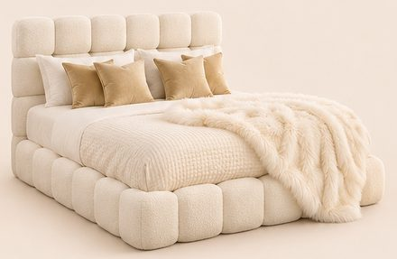
-
Tables de chevet arrondies à niche en arche (lot de 2)
40 × 40 × 50 cm, blanches, une niche en arche et une étagère ouverte.
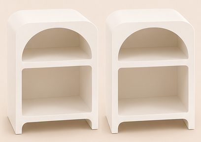
49,99 €Voir sur Amazon -
Banc bout de lit en fausse fourrure blanche
114 × 45 × 45 cm, assise ovale, gros pieds ronds, coffre.
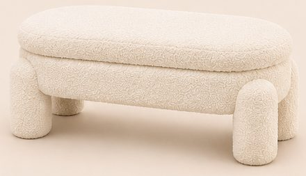
137,99 €Voir sur Amazon -
Tapis blanc à poils longs
160 × 230 cm, poils longs et doux. Sur l'image, le tapis paraît plus grand que 160 × 230 cm.
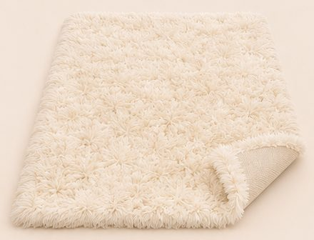
-
Sapin de Noël enneigé lumineux 180 cm
180 cm, Ø 102 cm, branches floquées blanches, LED blanc chaud.
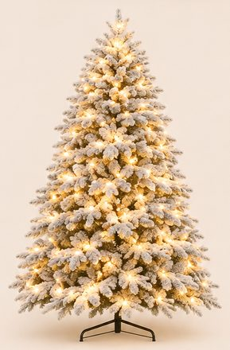
94,99 €Voir sur Amazon -
Suspension 3 anneaux dorés LED
Anneaux de 60, 40 et 20 cm, hauteur réglable, intensité variable.
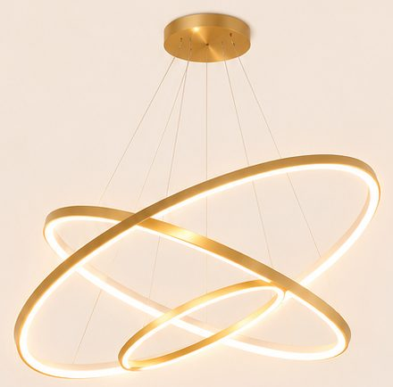
170,51 €Voir sur Amazon -
Housse de couette gaufrée blanche
220 × 240 cm + 2 taies 65 × 65 cm.
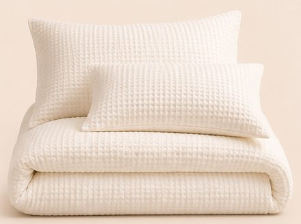
39,99 €Voir sur Amazon -
Plaid fausse fourrure blanc
230 × 250 cm, épais et très doux.
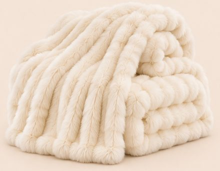
74,00 €Voir sur Amazon -
Housses de coussin velours champagne doré (lot de 2)
45 × 45 cm. L'image en montre 4 : 2 lots.
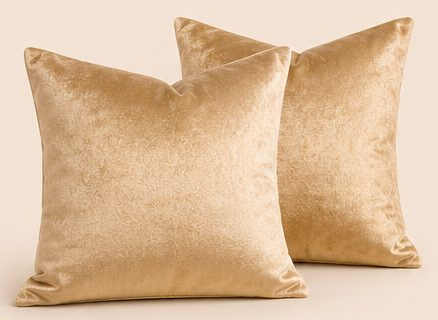
23,49 € (×2)Voir sur Amazon -
Lampe globe en verre opalin, pied doré
Globe blanc sur pied fin doré, ampoule E27. L'image en montre 2. Sur l'image, le pied de la lampe est un disque plat ; le vrai est un trépied fin.
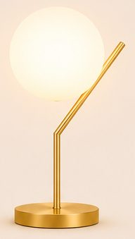
-
Boules de Noël champagne et blanc (lot de 106)
Boules, pommes de pin, fleurs et étoile de cime, incassables.
38,99 €Voir sur Amazon -
Rideau lumineux 3 × 3 m et voilage blanc
300 LED blanc chaud, télécommande ; voilages blancs 140 × 240 cm (2 pour la fenêtre).
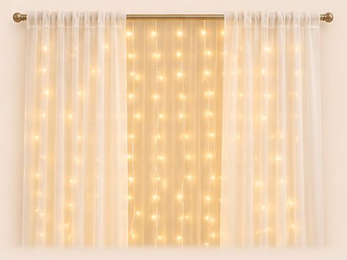
-
Branches lumineuses et vase blanc haut
Lot de 2 branches à 132 LED avec minuterie ; vase étroit en céramique blanche de 42 cm. Sur l'image, le vase paraît un peu plus haut que le vrai (42 cm).
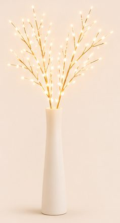
-
Ruban LED COB blanc chaud 10 m
2700 K, lumière continue, télécommande.
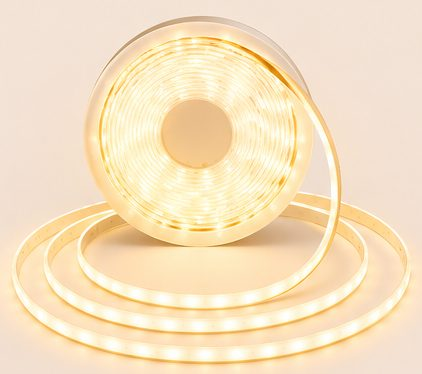
51,99 €Voir sur Amazon
Enregistrer ce look sur Pinterest
Comment naît un lookComment chaque article est choisi, mesuré et vérifiéImage d'inspiration générée par IA. Prix indicatifs, revérifiés toutes les deux semaines.